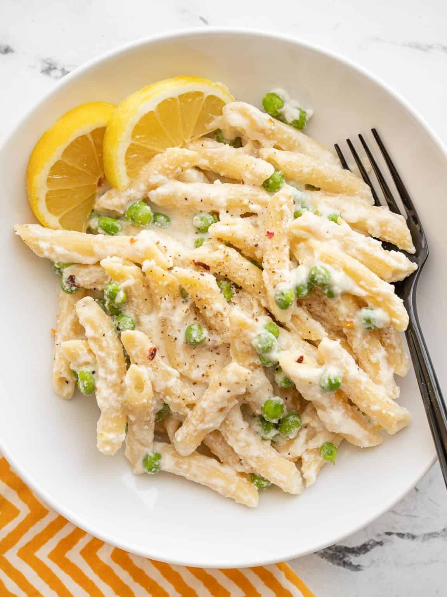

Lemon ricotta pasta

Delicious recipe designed for small budgets.
Let's start cooking!
Time spent
- Prep time: 10mins
- Cook time: 20mins
- Total time: 30mins
Ingredients
- 1 lemon
- 8 oz. pasta*
- 1 cup frozen peas
- 1 clove garlic, minced
- 1 Tbsp butter
- 1 cup whole milk ricotta
- 1/4 cup grated Parmesan
- 1/4 tsp salt (or to taste)
- 1/4 tsp freshly cracked black pepper (or to taste)
- 1 pinch crushed red pepper (or to taste)
*Use any short shape pasta.
Steps
- Zest and juice the lemon. You'll need about ½ tsp zest and 1 Tbsp lemon juice.
- Cook the pasta according to the package directions (boil for 7-10 minutes, or until tender). Before draining, reserve about 1 cup of the starchy water from the pot.
- Place the frozen peas in the colander before draining the pasta so the pasta will thaw the peas as it drains.
- Add the butter and minced garlic to a large skillet and sauté over medium heat for 1-2 minutes, or just until the garlic is fragrant.
- Add the drained pasta and peas, and about ½ cup of the starchy pasta cooking water to the skillet with the butter and garlic. Stir to combine, then turn off the heat.
- Add the ricotta, Parmesan, 1 tablespoon lemon juice, and ½ teaspoon lemon zest to the skillet. Stir until everything is well combined, the residual heat from the skillet and pasta have warmed the ricotta, and the ricotta has formed a creamy sauce. Add more of the warm reserved pasta water if needed.
- Season the pasta with salt, pepper, and crushed red pepper to taste. Serve warm.